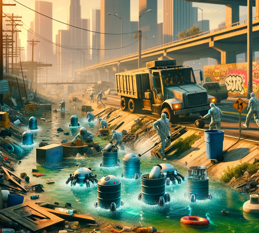

Bioremediation
Synthetic biology involves the design and construction of biological systems for useful purposes.
Learn More

Nanotechnology
Nanotechnology offers solutions for environmental cleanup due to its ability to manipulate materials at the nanoscale
Learn MorePhytoremediation
Phytoremediation is a green technology that utilizes plants to remove contaminants from soil, water, and air.
Learn More